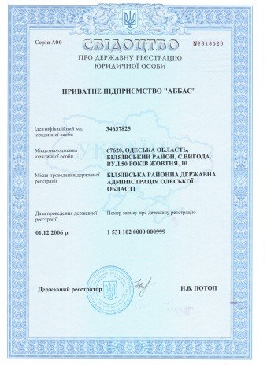
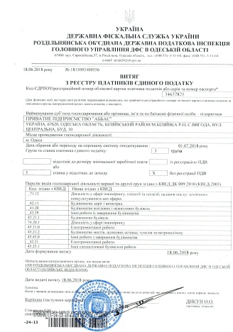

ПП «АББАС»

Вид деятельности:
Инжиниринг в строительстве
– это оказание инженерно-консультационных услуг для получения наибольшей прибыли от вложенного капитала.
Наша главная функция:
Технический надзор
— это комплекс проверок и
мониторинга площадки на всех этапах строительства — от начала проектирования и до окончания
работ. В нашей стране технадзор осуществляется в соответствии с постановлением
Кабмина Украины № 903 от 11.07.2007. Согласно этому документу, основная задача строительного
надзора состоит в контроле над соблюдением:
- проверку наличия документов, подтверждающих качество используемых строительных конструкций,
изделий, деталей и материалов, включая результаты их лабораторных испытаний.
Контроль качественных характеристик применяемого строительного оборудования;
- контроль качества завершенных строительно-монтажных работ на предмет соответствия
требованиям государственным стандартам, нормам и правилам;
- проверку соответствия фактического объема и качества работ проектной документации и сметам;
- ведение учета полного объема работ, принятого и оплаченного, а также выполненного с недостатками;
- участие в проверках объекта органами Госархстройконтроля и Государственного надзора,
контроль выполнения подрядчиком предписаний контролирующих органов государства по устранению
обнаруженных недостатков;
- осмотр и оценку (совместно с подрядчиком) результатов выполненных работ, включая скрытые работы
и строительные конструкции;
- оповещение подрядчика в случае, если строительные материалы, изделия или оборудование
не соответствует требованиям нормативной документации;
- оформление актов на некачественно выполненные работы;
- участие в деятельности рабочей комиссии по проверке качества отдельных строительно-монтажных
работ, узлов и конструкций, а также соответствия смонтированного оборудования техническим условиям.
Специалисты, осуществляющие технадзор на строительном объекте,имеют право требовать от подрядчика:
- соблюдения проектно-сметной и прочей технической документации, а также порядка выполнения и
приемки работ, в соответствии с положениями нормативных документов;
- остановки работ, в случае использования материалов, изделий и конструкций, не соответствующих
требованиям нормативной документации;
- проведения лабораторных испытаний используемых материалов, конструкций и оборудования;
- устранения отклонений от проекта, а также обнаруженных дефектов и недостатков;
- остановку монтажа строительных конструкций для проведения проверки и составления акта выполненных
скрытых работ.
Отсутствие технадзора: риски
Согласно Закону Украины «Об архитектурной деятельности», отсутствие технического надзора на
объекте является нарушением и может послужить основанием к административной ответственности.
Но это самое малое, что может случиться.
Некачественно выполненные строительные работы могут свести на нет достойный проект или интересное
архитектурное решение. Среди самых серьезных проблем на площадке можно выделить:
- отступление от проектных решений, что может повлечь серьезные проблемы при эксплуатации объекта;
- использование некачественных материалов и, как следствие, нарушение надежности конструкций;
- срыв сроков строительства, что приводит к снижению рентабельности проекта;
- значительное увеличение сметных расходов подрядчиком;
- ненадлежащее ведение исполнительной документации, что может вызвать проблемы с вводом
объекта в эксплуатацию.
Технический надзор на строительной площадке — положительное явление и гарантия того, что работы
соответствующего качества, будут вестись с соблюдением установленных норм. Это возможность уберечься
от недобросовестных подрядчиков и получить на финише ожидаемый результат.
Проектно-технические услуги – это сбор пакета документов для разработки проектов по организации
реконструкции и нового строительства объектов согласно действующих норм.
- Консультация по оформлению строительства
- Градостроительный расчет
- Генеральный план
- Детальный план территории
- План благоустройства территории
- Техническое обследование объектов
- Изготовление паспорта отделки фасадов
- Проектирование коттеджей и многоквартирных домов
- Проектирование общественных зданий и сооружений
- Авторский надзор
Разработка сметной документации - это комплекс работ по сбору необходимых данных и расчет стоимости
строительства.
- Создание проектно-сметной документации на новое строительство
- Создание проектно-сметной документации на капитальный ремонт
- Создание проектно-сметной документации на реконструкцию и реставрацию
Одним из преимуществ инжиниринговых компаний является то, что они могут производить строительство по
проектам, разработанным специалистами их компании. Все вопросы при строительстве объекта и монтаже
будут решаться оперативно и в срок.
О нас:
ПП «АББАС» - организовано в 2006 году, как проектно-строительная компания. На протяжении многих лет наша
фирма
выполняет строительные и ремонтные работы, разрабатываем проектно-сметную документацию на все виды работ.
Заказчиками фирмы являются как частные инвесторы, так и государственные учреждения.
С 2018 года вид деятельности расширился, мы стали проводить технический надзор за строительством. Наши
инженеры и эксперты осуществляют технический надзор, сопровождают и проверяют ход строительства и
реконструкции
самых разных объектов недвижимости на территории Одессы и Одесской области (школы и театры, больницы и
санатории,
жилые дома и общежития, зерновые терминалы и промышленные объекты, памятники архитектуры). Выполняем
строительно-ремонтные работы на объектах (класс ответственности С1).
Завершенные объекты строительства, успешно введены в строй и в процессе эксплуатации отвечают современным
требованиям надежной и бесперебойной работой всех систем их жизнеобеспечения.
Все сотрудники ПП «АББАС, осуществляющие мероприятия технического надзора на объектах строительства, обладают
необходимыми средствами и знаниями для контроля ПИР любой степени сложности. Это дипломированные
специалисты,
которые регулярно проходят курсы повышения квалификации и имеют допуски к соответствующим видам
деятельности. Наши услуги выгоднее, безопаснее, эффективнее, чем технический надзор заказчика
самостоятельно.
Документы:

Свидетельство о государственной регистрации юридических лиц.

Выписка из реестра плательщиков единого налога
Наши объекты:
- Технічний нагляд - «Будівництво Державної установи «Інститут очних хвороб і тканинної терапії
ім. В.П. Філатова Національної академії медичних наук України», а саме недобудованого лікувального
корпусу на Французькому бульварі,49/51 у Приморському районі м.Одеса»
- Технічний нагляд - Ремонт реставраційний будівлі КНП «Одеський обласний лікарсько – фізкультурний
диспансер» Одеської обласної ради» , м. Одеса, 2-й Куліковський провулок, 4
- Технічний нагляд - Ремонт реставраційний будівлі КНП «Одеський обласний очний шпиталь інвалідів війни»
Одеської обласної ради», м. Одеса, вул. Леонтовича, 2
- Технічний нагляд - Капітальний ремонт будівлі Одеського обласного гуманітарного центру позашкільної
освіти та виховання, розташованого за адресою: м. Одеса, вул. Тіниста, 2
- Капітальний ремонт будівлі аеровокзалу Комунального підприємства "Аеропорт Ізмаїл" за адресою:
Одеська область, м. Ізмаїл, Аеродромне шосе,17
- Технічний нагляд - «Ремонтно-реставраційні роботи будівлі (Літера«Д») - пам'ятки культурної спадщини
Вищого навчального комунального закладу «Одеське художнє училище імені Митрофана Борисовича Грекова»
за адресою: м.Одеса, вул.Преображенська, 14, у частині мереж внутрішнього електрообладнання
- Технічний нагляд - «Будівництво гуртожитку №1, військове містечко №Ч-1", смт Чорноморське Одеської
області. Шифр-Ч-1/Г1
- Робочий проект - «Капітальний ремонт спортивного майданчика,розташованого на території КЗ
«Центр соціально-психологічної реабілітації дітей служби у справах дітей Березівської районної
держадміністрації», м. Березівка, Одеської обл.
- Технічний нагляд – Капітальний ремонт КЗ «Одеська обласна школа вищої спортивної майстерності
«Олімпієць», м. Одеса, проспект Шевченка, 31
- Поточний ремонт кабінету ретинопатії (Центр запобігання дитячої сліпоти) поліклініки «ІОХ і ТТ
ім.В.П.Філатова НАМН», за адресою: м. Одеса, вул. Французький бульвар, 49/51
- Генплан «Багатофункціональний комплекс сільськогосподарського призначення» Вінницька обл.,
Козятинський р-н, смт. Глухівці, вул. Героїв Майдану, буд. 3
- Генплан «Багатофункціональний комплекс сільськогосподарського призначення» Вінницька обл., смт
Вороновиця,
вул. Молодіжна, 55
- Типовий проект: «Будівництво складського комплексу» замовлення ТОВ «Елексир Україна»
Стоимость соответствующих услуг технического надзора (будь то проектирование, технический надзор) от ПП
«АББАС»
определяется индивидуально по каждому договору и зависит от объемов выполняемых работ, пожеланий Заказчика
по интенсивности и частоте проверок и экспертиз.
Контактная информация:
Директор: Сунцов Валерий Степанович - 0674843821, 0487945065
Инженер-сметчик: Ковтун Надежда Александровна – 0948861197,
Архитектор: Аббас Алла Михайловна - 0980530485